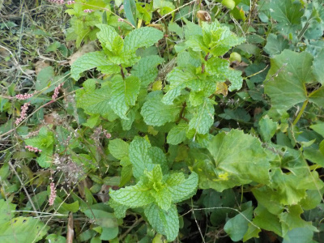
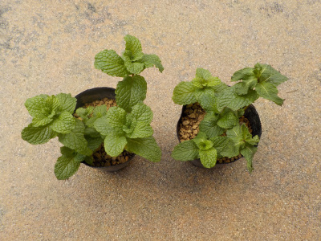
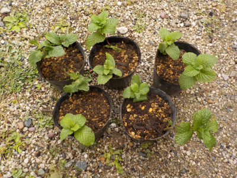
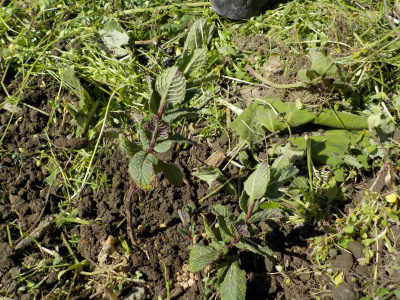
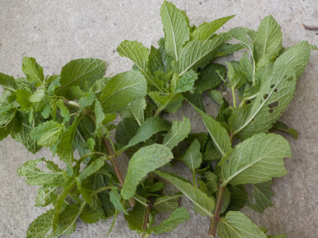
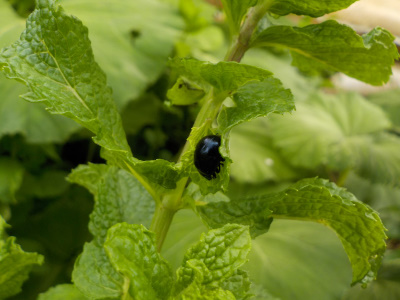
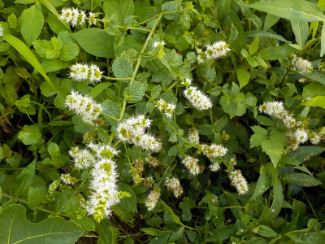
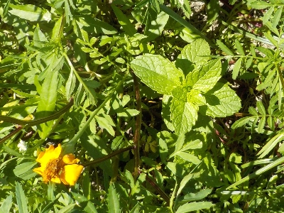

更新日 : 2022/11/06

以前から家に生えているミントです。何って名前のミントかは分かりません。どこかの何かと自然交配とか変異しているかもしれませんが、匂いはしっかりあります。
ミントの匂いがカメムシやネズミ除けになるって記事をよんだので、このミントをあちこちに植えようかと考えています。
でも本当かな。商売的なものの情報によるとネズミ除けになりますと書かれていますが、実験結果とか成功例ってちゃんとあるのかな？
更新日 : 2022/12/25

挿し芽したミントが12月ですが元気に育ってます。挿し芽に成功しました。

ギュウギュウなのでポットに2本づつに分けて植え替えました。冬なのでしばらくは成長はしないかな。
更新日 : 2023/04/02

暖かくなったのでミントを地植えにしました。
雑草に負けないで育って欲しいです。
更新日 : 2023/05/21

図書館で本を見ていたらミントの本がありました。その本によると、ミントは体にいいので色々使って食べようってあったので、食べることにしました。
収獲して思ったんですが、虫食いが多いです。虫に人気があるんですね。全然虫よけにならなそう。
ミントを細かく刻んでレタスといっしょに食べるつもりです。
更新日 : 2023/06/10

葉っぱに黒い甲虫がいました。こいつがミントの葉っぱを食べています。
ハッカハムシって名前のようです。
ミントの葉は沢山あるので、虫が食べても問題ないです。
更新日 : 2023/08/27

今年地植えしたミントです。これだけ沢山咲いたら、沢山種を落として増えそうですね。
でもちょっと大きくなり過ぎていたので全部草刈りしました。
ミントはいい香りがするので、草刈りしててちょっと気持ちいです。
更新日 : 2025/08/30

ナス、トマト、ピーマンにカメムシが大量に発生しました。
カメムシはミントの香りが嫌いとネットにあったのでマリーゴールドと一緒に近くに植えたんですけど、あんまり成長していません。
ミントは成長が早く繁茂しやすいイメージがあったので、なんかガッカリです。
でもまあ、家のミントも雑草に負けてるのでこんなものかな。
ミントの香りで蜘蛛益虫がいなくなるのは致命的かも。
【おいしいものを食べよう。】【たくさん寝よう。】
【ソロ活をしよう!】【季節感のあることをしよう。】【動画視聴はほどほどに。】【当サイトの全てのコンテンツは無断転載禁止です。】